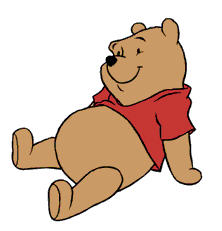
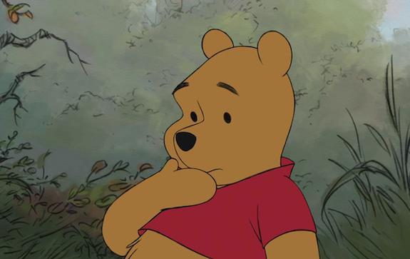
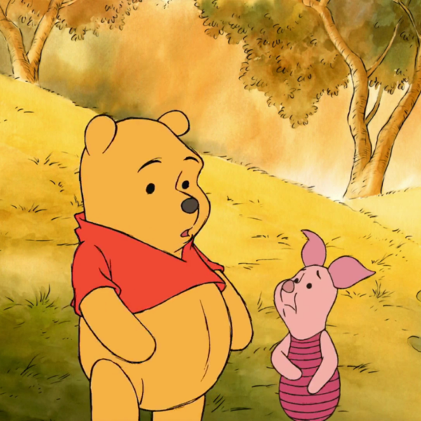
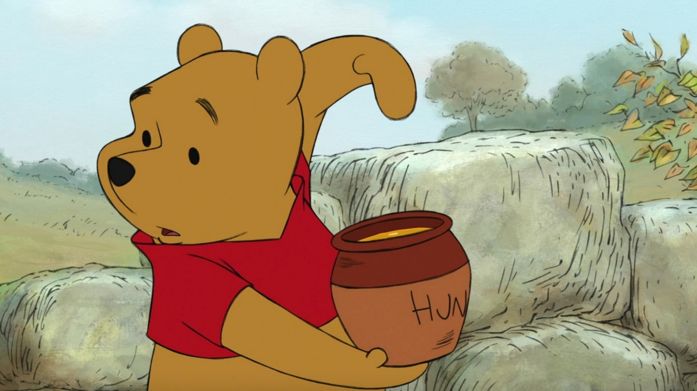
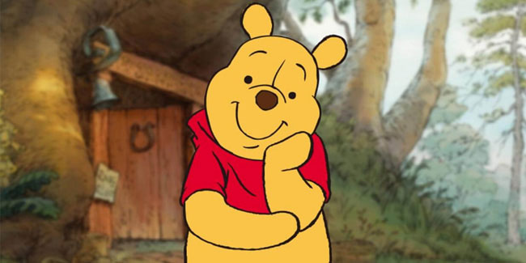
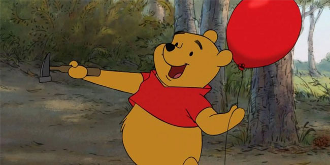
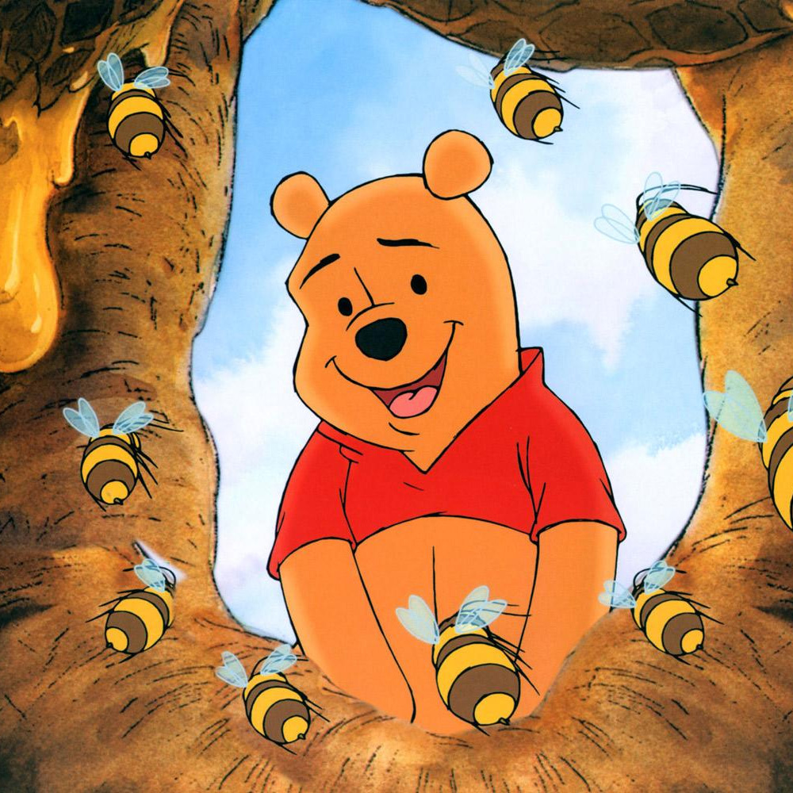
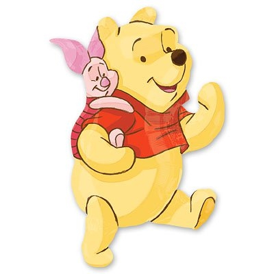
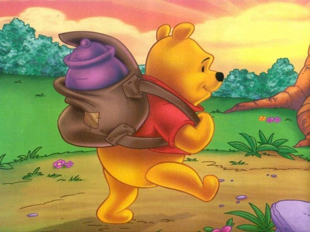

«Винни-Пух», жизнерадостный медвежонок с опилками в голове, который любит распевать песенки, сочиняемые им шумелки-пыхтелки. Больше всего на свете Винни любит лакомиться мёдом и проводить время со своим лучшим другом, поросенком Пятачком.Винни Пух - очень неуклюжий. И почти всегда невозмутимый. Он достаточно добродушный, но и хитрый: он окунается в пруд, чтобы притвориться тучей и спрятаться от пчёл, а к Кролику заходит в гости чтобы перекусить. Также он периодически задается глубокими философскими вопросами, а когда сталкивается с преградой ставит её перед собой как конкретную проблему и таким образом находит её решение. В этом ему очень помогает желание понять сложную психологию каждого существа вокруг себя. Планы у него всегда самые грандиозные, однако его потребности просты — он хочет рифмовать свои новые Кричалки, Вопилки, Сопелки, Пыхтелки, Ворчалки и Шумелки и лакомиться мёдом, которым ему сложно поделиться с кем-то ещё. Из-за своего отменного аппетита и любознательности Винни постоянно попадает в различные невообразимо смешные, а иногда и на редкость затруднительные положения. То он застрянет в норе, то потеряет подарок, а то и зависнет в воздухе на воздушном шарике.
Винни-Пух был назван по имени медведицы по кличке Виннипег, содержавшейся в 1920-х в Лондонском зоопарке. Медведица Виннипег (американский чёрный медведь) попала в Великобританию как живой талисман Канадского армейского ветеринарного корпуса из Канады, а именно из окрестностей города Виннипега. Вторая часть имени - Пух (Pooh) происходит от имени лебедя, который жил у знакомых Милнов (он фигурирует в сборнике "Когда мы были совсем маленькими").
14 октября – день, когда в Лондоне в 1926 году вышла в свет первая книга о Винни-Пухе
Эшдаунский лес
        